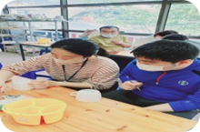
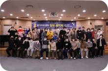
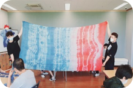
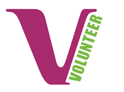

행복의 시작
자원봉사 길라잡이
활동 전 필수사항
- 1VMS(www.vms.or.kr) 회원가입1365자원봉사포털 연계 동의, 상해보험가입 동의
- 21365 자원봉사포털(www.1365.go.kr) 회원가입VMS 연계 동의, 상해보험가입 동의
- 3VMS(사회복지자원봉사인관리)와 1365자원봉사포털에 각각 회원가입을 한다.
자원봉사 참여방법
- 1나에게 맞는 자원봉사 알아보기
- 2활동가능한 봉사시간 정하기
- - 활동기간 : 단기(3개월 미만), 장기/정기(3개월 이상), 장기/비정기(3개월 이상), 1회성
- - 봉사주기 : 매일/주1회/월1회
- - 희망요일 & 시간(오전/오후)
- - 1회 활동 가능한 시간
- *복지관 특성상 봉사활동은 평일만 가능하며 행사가 있는 경우 토요일에 활동 가능
- *1일 최대 8시간까지인정하며 단, 중·고등학생은 학기 중 평일 최대 2시간 인정
- 3자원봉사 담당자와 상담 후 신청(전화, 내방, 홈페이지)
- 4기관안내 및 사전교육 듣기
- 5봉사활동 실시하기
- 6자원봉사활동 일지 작성하기
- 7자원봉사 활동 확인서 발급하기(VMS 인증서)
자원봉사 활동분야

프로그램 보조

행사지원

재능기부
외부활동 보조
- 저희 복지관은 VMS 사회인증센터(https://www.vms.or.kr) 통해 봉사시간을 부여하고 있습니다.
- ※VMS 가입 시 1365 자원봉사포털(https://www.1365.go.kr) 연동에 체크해 주세요.

VMS 바로가기
-
VMS란?
- 전국의 사회복지시설 및 공공기관, 기업 사회공헌팀과 네트워크를 구축하여 13,000여곳의 봉사활동처에서 지원봉사자의 봉사실적을 정확하고 체계적으로 누적 관리하는 시스템을 말합니다.
- 자원봉사활동 시간과 일수를 알고 싶을 땐 접속하여 로그인 후 확인 가능
- 봉사활동인증서는 직접 출력하실 수 있습니다.
- 해당 수요처에서는 활동 봉사실적 기입을목적으로 하며, 개인정보는 해당 시스템에서 직접 수정하시면 됩니다.
문의 : 031-934-2073